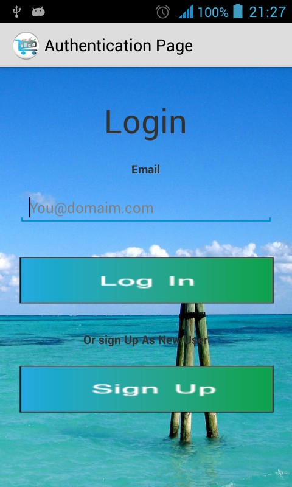
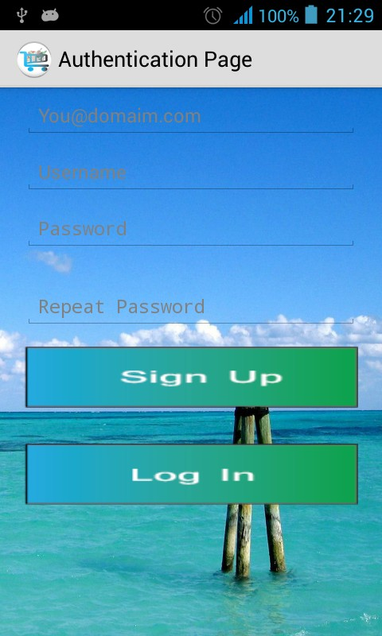
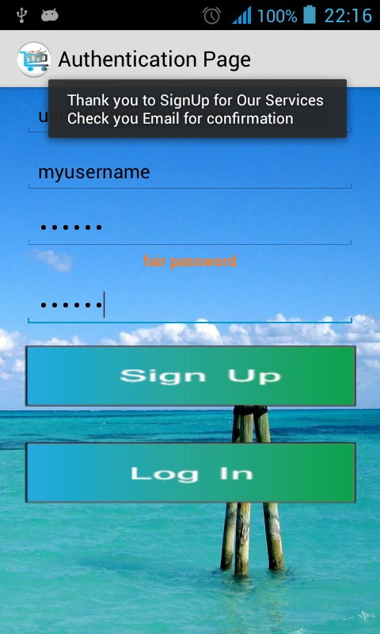
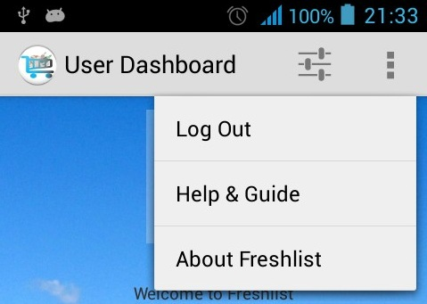
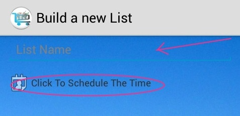
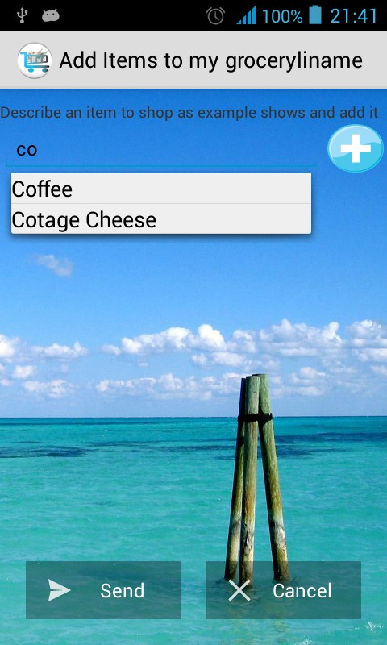
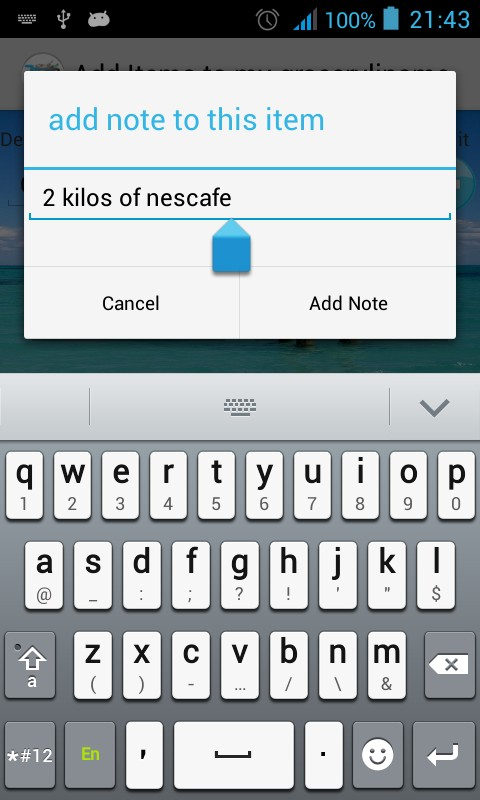

This is a user Guidance or Help of How to Use this App which help you make a list of activities you need use to do for you.
When launched this app for first time you will be asked to login, so provide you email to login or You can click on sign Up button so you can signup

If you are a new user (didnt have account before) from login page you
can click on sign up button, so you will be presented with a for to
fill in with your username,email, password and repeat password.
Provide them and click a button below labeled Sign Up.

After that pay attention
to see the message we give you.if The message says thank to SignUp,

then you can check in
your email inbox or spams you will have an activation email,click on
it to activate your account.Then you can come back to freshlist on
login with your email.Once you logged in you will stay logged in
until you log out yourself .
If you need to log out you can log out yourself from app when you click on 3 dots or menu >> More in the dropdown list click on Log Out.

To create a new list you need to click on bottom button lebel add(+)
and you will need to give the list a name (any name you want), you
must click on that text to schedule the time when this list should be
executed by us.

once
you have confirmed to set time scheduled time you will see to choices
if this list belongs to which service,check one of them and confirm
the list details, that's all;
After building a list you can add items to a list by giving each item
a name but before adding it to list you can provide more information
as note in the dialog which will be presented to you after clicking
on add(+) button or enter key from your keyboard.


After adding all items you
need then you can send that list by clicking on send button.
To add your address or an address where will deliver our services for you, you need give an address and more information about it as shown below.